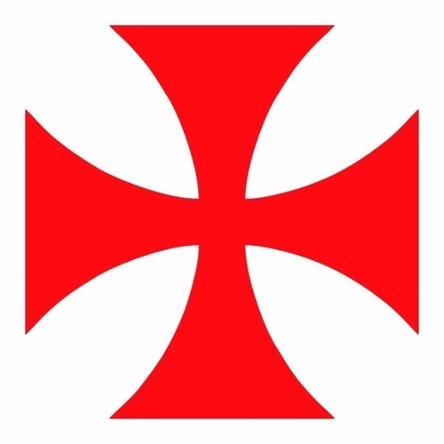

O Club de Regatas Vasco da Gama foi fundado em 21 de agosto de 1898, por um grupo de
remadores, e rapidamente se destacou no futebol, que foi introduzido no clube em 1915. O
Vasco é um dos clubes mais tradicionais do Brasil e ganhou seu primeiro Campeonato
Carioca em 1923.
O clube ficou famoso na década de 1940, quando formou uma equipe lendária, conhecida
como "Expresso da Vitória", que conquistou vários títulos. O Vasco também foi pioneiro ao
abrir suas portas para jogadores negros e de classes sociais menos favorecidas, tornando-se
um símbolo de inclusão no esporte.
Nas décadas seguintes, o clube continuou a acumular títulos importantes, incluindo o
Campeonato Brasileiro em 1974 e 1989, e conquistou a Copa Libertadores em 1998,
consolidando seu status no cenário nacional e internacional.
Curiosidades:
Cruzeiro de Malta: O símbolo do clube, o cruz de malta, é uma referência ao navegador
português Vasco da Gama e representa a luta e a determinação do clube, além de ser um dos
distintivos mais icônicos do futebol brasileiro.

Estádio de São Januário: O Vasco manda seus jogos no Estádio de São Januário, inaugurado
em 1927, que é um dos mais tradicionais do Brasil e tem uma rica história de grandes partidas
e eventos.
Rivalidades Históricas: O Vasco tem rivalidades marcantes, especialmente com Flamengo
Fluminense e Botafogo, tornando os clássicos emocionantes e sempre esperados
pelas torcidas.